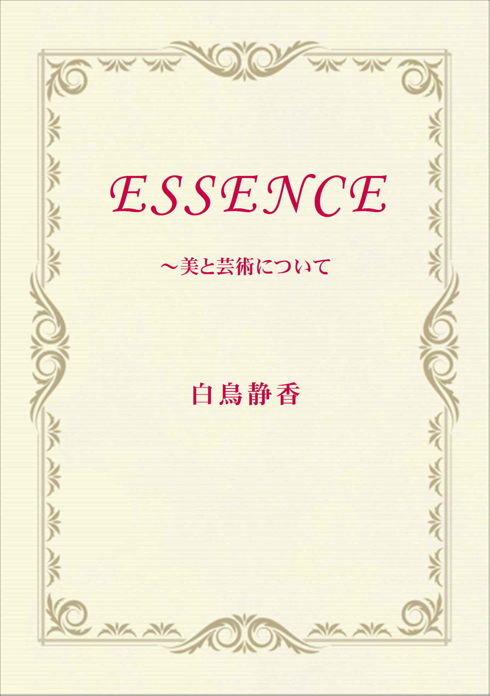

| ESSENCE: ～美と芸術について | |
| 白鳥静香 | |
| Multiverse Publishing (2016) | |

ESSENCE
～美と芸術について
白鳥静香
目次
皆さまご存知のように、哲学の始まりは、古代ギリシャにあると言われています。
そこで考えられた問題は、現代の難しい哲学と違って真と善と美そのものでありました。
私たちも、もう一度始まりに戻って真と善と美を素直な心で考えてみませんか。
すべての美を愛する人に贈ります。
白鳥静香
「光あれ。」
美とは調和である。
美とは多様性の中の一である。
美とは一即多・多即一である。
美の発見とは、環境に応じる一即多・多即一の発見である。
美とは一即多・多即一、つまり美とは調和であり、整合性である。
（注）たとえば、目と鼻の形が整合しているとき、その人は美しいと言われる。
生命の本当の美しさとは、環境に対して一即多・多即一、つまり環境に対して整合性をつくり出そうとする自発性にこそ存在する。
それは無形なる意志である。
生命の本当の美しさは外面的な形態にあるわけではない。
すでにつくられ、外面的な形態となったものへの執着は自発性の低下、つまり生命の美しさをそこなうことである。
芸術も習いはじめは美醜を差別し、美醜を峻別することをおぼえなくてはならない。
しかし、もしそれを芸術の本質と捉えてしまうなら、そのような芸術は人間性にとって有害であるだろう。
そのような芸術観によってつくられた芸術は、人間の差別心を助長してしまうだろうからである。
人間性にとって有害なるものが美であるわけはない。
私はクリスチャンではないが、クリスチャンでなくとも聖書の創世記にある、神が天地をつくったあと、それを眺めて「すべてよし。」と言ったというその神話の意味を考えなくてはならない。
楽園とは、ここかしこ、というようなどこかの場所のことではなく、その「すべてよし。」という言葉の、
「すべてよし。」という心の中にこそあるのだろう。
美醜に限らず、あらゆる差別心は楽園を喪失した者の心である。
本来の人間性とは、やはり楽園を喪失する以前の心の中にこそあるのだろう。
失楽園が神話という形式によって象徴的に書かれたものであるとしても、それはでたらめな話ではないはずである。
美、そして芸術の真理は調和、整合性にある。
不調和や不整合は美の反対である。
美醜を峻別することは、ひとつの差別であり、差別は不調和であり、不整合、
つまり美の反対のことなのである。
しかし、人間が美を見出だそうとするとき、あるいは芸術をなそうとするとき、
「これは美しい。」あるいは、「これは醜い。」と美醜の差別をしているのではないだろうか？
人間の芸術は美醜の差別の上に立てられているのではないだろうか？
人間は美を求めながら、いや、美を求めることで、逆に美を壊してしまっているのではないのだろうか？
美醜を差別し、美を選びとろうとする意志そのものが、不調和となり、不整合となり、世界の美を壊し、見えなくしてしまう。
ここに人間の芸術の根本的な矛盾、原罪といってもよいかもしれないが・・・・
がある。
これは芸術だけではなく、学問や道徳においてもその深いところで有されている矛盾であるだろう。
人間においては、真理を目指す意志こそが逆に真理を見えなくし、善をなそうとする意志こそが別の悪を生んでしまう。
美を求めて、つまり調和や整合性を求めて最後にたどりつくのは、一切の差別、つまり、一切の不調和のないところのはずである。
それはただ、無限なるもののみに見出されるしかないものである。
自然界のものに見出される美ではそこまでは行かない。
自然界の美とは有限なるものが、有限なる周囲の環境との適応をつくり出そうとして、つくり出した調和であるからである。
それは、別の環境においては調和とはならない形である。
もちろん、人為的なるものも同じである。
人為的なるものも、またある環境への人の適応であるからだ。
無限なるものは自然界の中にも、人為的なるものの中にもなく、
ただ超自然的なるものなのである。
無限なるもののみが何物をも差別することもなく、何物をも捨てることのない本当の調和である。
それは愛と同じものである。
有限なるものにはどこかに醜さがある。
それが有限性の本質である。
有限であるがゆえに自分自身の内に包みきれない、自分自身の心で愛しきれない何かを捨てる。それが不調和、不整合として醜さとなる。
ただ無限なるもののみがすべてを包んでけして捨てることのない完全な調和である。
それのみが本当に美しい。
まあ、それは有限なる形に表現できるというものでもないのだが......。
（注）人為的なるものとは、形のある制作物だけではなく、制度のような社会的なものや、理念のような思想的なものも含むすべての人為的につくられたもののことである。
本当の愛とは自然界の中にも、人為的なるものの中にもない。
本当の愛とはただ超自然的なるものの中にのみある。
美が調和であるなら、本当の調和はただ無限なるもの、無限なる愛の中にしかないからである。
無限なるもののみが何物も捨てず、何物も差別しないからである。
無限なるものは、自然でも人為でもない。ただ超自然である。
そして本当の愛とは、それがこの世の有限なる存在者とは絶対に隔絶しているがゆえに、ひとつの奇蹟なのである。
本当の奇蹟とは、海を割り、山を動かすことでも、また異言*を話すようなことでもない。
本当の奇蹟とは愛、ただ愛のみなのである。
愛こそが本当の奇蹟である。
その愛とは何物をも差別することなく、何物をも捨てることのない愛である。
*異言・・・霊や天使の言葉。
有限性とはひとつの排他性である。
有限性とは、自分自身の内に包むことのできないものがあるということであり、
自分自身の心で愛することのできないものがあるということである。
有限性とはひとつの不調和であり、ひとつの不整合である。
美を求めるということにおいても、有限なるものの中に求めているものは、つまり、本当の美はない。
神話において、神が天地をつくり、「すべてよし。」といったといわれるとおりに、
その天地を「すべて美 し。」として受け容れる心こそが本当に美しいものである。
本当に美しいのはただ愛、ただ無限なる愛、無限に、そして無条件に愛する愛のみである。
そのような愛はすべてを包むからである。
すべてを包むなら、そこにはどのような不調和もどのような不整合もないからである。
美とは調和のこと、整合性のことであるのだから。
美醜の差別や峻別を芸術の本質とした芸術活動では、結局最後にはすべてが醜とされ、
究極、世界には何ひとつ美として残るものはないだろう。
それはもはや、絶望の世界である。
芸術家の自殺などにはこのことも影響しているのではないだろうか？
ここに美醜の峻別ということとはタイプを異にした二つの芸術が存在する。
ひとつは東洋の老荘思想に基づく芸術であり、
いまひとつは、日本の仏教に（必ずしもインド発祥の仏教のオーソドックスな受け取り方ではないという意味で、あえて日本のとつけるが）日本の仏教に基づく芸術である。
たとえば前者は掛け軸などに、必ずしも美しくない人物、どちらかと言えば異形とも思える子どもや、仙人を描いたり、
茶道などで使用する形のゆがんだ茶碗などに現れている。
後者は特に日本の和歌や、桜の花を美しいと思う感性によく現れているだろう。
おそらく前者は、醜いものも、美しいものも、差別しないという老荘思想の万物斉同 * の哲学に基づいているであろうし、
後者は仏教の無常観、たとえば永遠に咲いている花であれば人は特に見向きもしないであろうが、
明日、散るかもしれない無常という現実が、花への愛おしさ、慈悲となり、その心こそが美を見出す。という無常観に基づいたものであるだろう。
本来の仏教の無常観は、「無常なるものへの執着は苦しみをもたらすものであるから、そこから厭い、離れよ。」というものであるので、
美に対するそのような感じ方は日本人独特の無常の解釈ではあるだろうが、(日本の)仏教の無常観に基づいている美の考え方である。
このどちらもが、美醜の峻別に基づいた芸術観ではない。
このどちらも、見られる対象ではなく、見る主体の側の愛や慈悲心、心の広さに基づく芸術観である。
これらのタイプの芸術は醜いものを差別し、殺すのではなく、究極、宇宙のすべての存在を認め、生かすという方向性を有している。
*万物斉同 ・・・宇宙の無限から見たとき、善悪美醜など人間がつくったいっさいの価値の差は無であるということ。
西洋の現代の抽象芸術の混沌や、有名な現代の抽象芸術家達の自殺の多さは、西洋の、ギリシャに始まる二千年以上の美醜の峻別を本質としている芸術観による絶望なのではないか？と私は考えている。
西洋芸術の中の抽象芸術には包まれた感じがしないものが多い。
(無論、例外もあるが、)
それらに絶望や引き裂かれた感じ、孤独感や閉塞感などを感じてしまうのは私だけではないだろう。
それに較 べて、東洋の抽象芸術である茶室などは包まれた感じ、石庭などは包まれ、なおかつ広大なものに開かれた感じ、
俳句などもまた、良質なものは瞬間のつまらぬものの中に光と永遠とを感じることがある。
勿論、19世紀以降の東洋の芸術も西洋の芸術に随分学ばせてもらったが、(ジャポニズムの例のように、西洋の芸術家たちも日本の芸術に学んでもいるが、)
東洋の抽象芸術は西洋の抽象芸術に対して、寄与することができるのではないかと思う。
寄与するところがあるとすれば、それは制作における具体的な技術の部分よりも、
美醜の差別や美醜の峻別ではないところの芸術観、美についての考え方の部分に、より多くあるだろう。
私にとって、芸術とは美醜の差別や峻別ではなく、愛であり、慈悲心である。
すべてを差別なく包んで、何物も捨てない心のことである。
それはむしろ、対象の中にあるというよりは、制作する主体や鑑賞する主体の心のあり方の中にある。
美とは対象の中の整合性より、まず制作や鑑賞をする主体の心の、魂自体の整合性である。
心が無我であるとき、差別するものはなく、すべてがユニークである。
存在に無常を感じるとき、自分自身の慈悲心がすべての存在を輝かせる。
これらのことは対象の中に美醜を見、その美醜を峻別しようとする芸術観、美学とは異なるものである。
美醜を峻別して、醜いものを捨てていこうとするなら、最後には何も残らず、絶望に到るが、
無我や慈悲心に基づく美は最後に宇宙のすべてを包み、捨てるものが何もないという境地に到る。
前者は地獄であり、後者は、天国あるいは、東洋的にいうならみ仏の心、仏心 である。
心が無我であるとき、出会うすべてのものがユニークで、捨てるものがない。
無常を感じ、心が慈悲であるとき、どのような存在も輝いている。
美醜の差別は人間のエゴイズムによる世界への上書きであり、
実際には神話で神が天地を創造した後、「すべてよし。」と言ったあの言葉のとおり、
世界には醜いものなど何ひとつないというのが本当の現実なのである。
東洋の芸術は無我を目指し、慈悲心をこそ美とした。
それは道に到り、仏心 に到ろうというひとつの試みである。
ゆえに東洋では芸術を「道」という宗教的価値を表 す言葉で呼び、芸に達した人はいかに身分が低かろうと、
また宗教的修行をした人ではなかろうと、「聖」としたのである。
ヨーロッパの文化においては聖人とはただ教会への寄与者のみのことなのである。
心が無我であるとき、出会うすべてのものがユニークで捨てるものがない。
無常を感じ、心が慈悲であるとき、どのような存在も輝いている。
美をそのようなものとしたとき、そのような美を見出す心は自分の中の大宇宙の心、つまり、「道」であり、仏の心、「仏心 」である。
そのような心は、差別や峻別ではなく包容、裁きではなく愛だからである。
そのとき、心はすべてを包んで何物も捨てるものがない。
美醜を峻別する芸術において、美醜を峻別する心がすでに美しくない。
美が整合性であるとして、美醜を峻別すること自体がひとつの不整合だからである。
そして峻別され、捨てられたものは一体どこにたまってゆくのだろうか？
それは自分自身の心において地獄となり、絶望となってゆくのではないだろうか？
極端な話、美醜の峻別に基づく芸術はたったひとつの究極の美なるもののために世界の他のすべての存在を差別し、捨ててしまう。
あげくのはてに、最後に残ったそのひとつさえ気に入らず捨ててしまうことになるだろう。
実際には、ほとんどの芸術家はそこまで行くわけではないとしても、美醜を差別し、峻別することを芸術であると考えるなら、志向性としては、そちらの方向性を志向してしまうであろう。
それは愛とは逆のことであり、愛の逆である以上、それは絶望や地獄への方向性である。
光なき心こそが絶望であり、愛なき心こそが地獄だからである。
神が天地を創った後、「すべてよし。」と言ったという神話、
そして、「善悪を識る樹の実」の神話、これは自分なりの善悪の基準をつくって、それを世界に上書きし、
そのエゴイズムに基づいた基準によって世界を差別するという意味なのであろうが、
この、はじめにつくられた人間である、アダムとイブが食べることを神に禁じられた「善悪を識る樹の実」を食べて楽園を喪失し、苦しみの人生を得るようになったという神話*、
これらの二つの神話は、宗教的にも非常に深いものを含んでいると思うが、芸術ということにおいてもまた、この神話は非常に重要な、学ぶべきものを象徴している。
神話は論理ではなく、象徴として物事を表現しているがゆえに、ときとして論理的思考よりも物事の全体像をとらえ、より深い現実を表現していることがあるということなのだろう。
*聖書の神話
私にとって美とは、そして芸術とは、調和であり、無我であり、愛であり、慈悲心である。
神話の言葉で言うなら、私にとっての芸術とは楽園喪失の後の芸術ではなく、
楽園喪失以前の、人類が罪に堕 ちる以前の芸術である。
神話で「失楽園」とか、「善悪を識る樹の実を食べる。」といわれているものは、つまり、人間が世界のありのままの光を見なくなることであるのだろう。
私にとって芸術活動とは、神が創造し、「すべてよし。」と言ったままの世界を、世界の光を見ることである。
私にとっての芸術とは、楽園を失った後の心での芸術活動のことではない。
堕罪し、楽園を喪失した者の心には世界は苦しく、そして、醜い。
楽園を取り戻した者の心には世界は愛と光と安らぎに満ち、すべてがユニークで、すべてが美しい。
本当は世界は愛と、光と、安らぎとに満ち、すべてはユニークですべてが美しい。
世界を苦しく、そして醜く見せているのは自分自身のエゴイズムによる世界への上書きなのである。
私にとって、宗教とはエゴイズムの停止ということであるが、
私にとっては芸術活動もまた、エゴイズムの停止である。
私にとって、芸術活動とは自分自身のエゴイズムを停止して、自分自身のエゴイズムによる世界への上書きを止め、
世界のありのまま、世界のありのままの輝きを見ることである。
美醜の峻別を本質とする芸術は苦しみである。
そこに安らぎはない。
よく、ピアノの先生には厳しい先生が多いといわれるが、
美醜の峻別を本質とするタイプの芸術観をもつことは、たとえていえば厳しいピアノの先生に四六時中指導されているようなものである。
美醜の峻別を本質とする芸術は苦しい。
そこに安らぎはない。
愛や安らぎは、単なる外面的な形態における整合性や調和よりも、より大きな整合性である。
有限な、形のある世界においての調和や整合性が一般にいわれている美であるとするなら、
愛や安らぎは単なる有限な形の美の根底にある本当の美である。
神話に楽園の情景の象徴として、「羊と狼とがともに仲良く草を食 む。」という言葉があるが、
そのような愛や安らぎこそ、本当の美であり、また芸術以外の、人間のあらゆる活動において求められ、またあらゆる活動の根底に不可欠な調和であり整合性であるだろう。
愛こそが本当の美である。
包んで何物も捨てることのない愛こそが本当の美である。
愛においてのみ、一切の不調和、不整合が停止するからである。
私心 が無いとき、世界は本当に美しい。
世界に何も求めないとき、世界は本当に美しい。
何もかもが輝いている。
それこそが愛なのである。
絶望が私心 を砕いたなら、それもまた世界の光を見せてくれる。
もちろん、絶望することを薦 めるわけではないが、どのような越え方であっても、自我の限界を越えるなら、そこには光があふれている。
自我の限界の外には光があふれている。
それが世界の真実である。
私心 が無いとき、世界は本当に美しい。
何もかもが輝いている。
私心 が無いとき、世界に何物も求めることが無いとき、道端の雑草でさえも、
まるで宝石のように輝きを放っている。
本当にポワッとその葉や花のまわりに光をまとっている。
そして本当に小さな雑草さえもが、「見て！見て！」と無邪気に声をかけてくる。
世界はこんなにも光だ。
もし道端の雑草であっても、それを本当に見ることができたなら、
私心 、つまり、何かを求める心が停止して、ただ本当に道端の雑草を見ることができたなら、その人は世界の光を見る。
また、それは世界の本当の光を見るひとつの方法論でもある。
すべてを包んで捨てない愛こそが美を見出す。
いや、すべてを包んで捨てない愛そのものこそが、美である。
すべてを包んで捨てない愛の中には一切の不調和、一切の不整合が無いからである。
愛こそが美である。
ESSENCE ～美と芸術について
end
神は六日で天地を創られた後、それを眺めて言われた。
「すべてよし。」
この本は美について書いた本です。
美を求める心は人間のあらゆる欲求のうちでも根本的な欲求のひとつであり、
善いとされている欲求のひとつです。
確かにそれは、人間のあらゆる欲求の中でも最も善い欲求のひとつではあるのですが、
美を求める欲求にはあらゆる存在を自分の信じる物差しによって差別し、峻別するという一面もまたあり、
物事を差別し、峻別する心はときに自分の、そして他の人たちの心に
傷や苦しみをつくるものでもあるでしょう。
この本ではひとつの簡単な試論として
美を調和や整合性と定義することからはじめて、
美が調和や整合性であるからこそ、
美とはすべてを包んで何物も捨てることのない愛であるという考えに到りました。
小さな本ですが、この本によって美や芸術の分野だけでなく、
あらゆる分野の活動において人間同士の差別心や分裂が減ることを願っています。
最後に言葉をひとつ贈ります。
｢愛は裁かない。｣
白鳥静香
Special Thanks
K.N.様ずっと私を支えてくれたのはあなたです。
あなたがいなければこの本は書けませんでした。
ありがとう。
心からの感謝をこめて。
白鳥静香
白鳥静香 (しらとり しずか)
歌人・作家。
ESSENCE
～美と芸術について
発 行(電子書籍版) 2016年12月25日 Ver.1.0
著 者 白鳥静香
発行者 Multiverse Publishing
E-mail multiversepublishing1@gmail.com
(C) 2016 Shizuka Shiratori
本書の一部、または全部について無断で複写・複製・転載を行うことを禁じます。
ISBN 978-4-909103-00-0